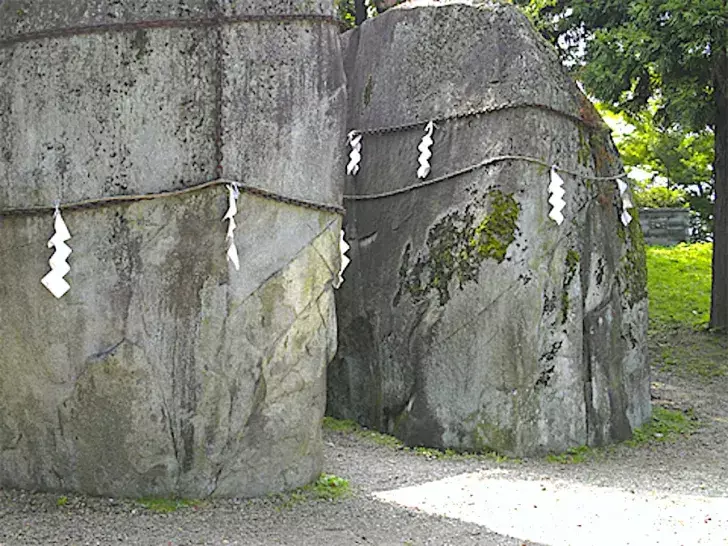
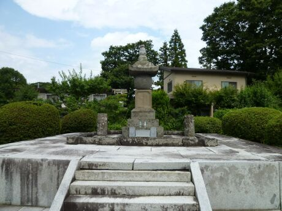

都市伝説
遠野市にあるカッパ渕です。ここの川には妖怪として有名なカッパが
棲んでいると言われています。ここでは観光施設の「伝承園」があり、
そこで「カッパ捕獲許可証」を購入することできゅうりを餌にカッパ釣り
を体験することが出来ます。
鬼の手形

次は盛岡市の名須川町にある三ツ石神社から鬼の手形です。
画像にある二つの岩には鬼の手形と思われる手形があります。
この岩の起源は昔に三ツ石神社周辺で鬼が悪さをしていて、困っ
た村民は「三ツ石さま」と呼ばれる上記の画像の大岩に悪鬼追討
の祈りを捧げた。これに対して三ツ石の神は、鬼に「二度とこの
地を荒らさない」と確約させ、証明として自身の力が宿る大岩に手
形を残させた。
この逸話から、「不来方」（こちらの方向には二度と来ない）とい
う由来の土地名が実際に矢巾町にある。
ムカデ姫

画像のお墓は、於武の方（通称ムカデ姫）と呼ばれる、戦国武将蒲生氏郷
の養女で盛岡藩二代目当主の南部利直公の正室の墓標です。
於武の方がムカデ姫と呼ばれる所以は彼女の祖先の頃の逸話から始まりま
す。俵藤太という若者の話で簡潔に纏めると彼の武者修行中に街道で大き
な蛇が道を塞いでおり、その蛇を踏み越えて渡った藤太の下に大蛇を名乗
る美女がやってきて三上山に棲み着いた大ムカデを退治してくれと頼まれ
三本の大きな弓を使い、二本目の弓が壊れ三本目の弓も最後の矢となって
漸く退治できた。
という逸話があり、於武の方は最後の矢の鏃を持って輿入れした。於武の
方が没した時には遺体の至る所にムカデが這いまわった跡がついていたと
いう。その場に居合わせた者たちは口をそろえて「大ムカデの呪いに違い
ないと言っていたという。
利直は水堀で囲った場所に墓標と一つの橋を立てたが何度も橋を壊す大ムカデ
の姿が確認された。ムカデ姫こと於武の方は盛岡市の光台台にある墓標で
今も眠っている。